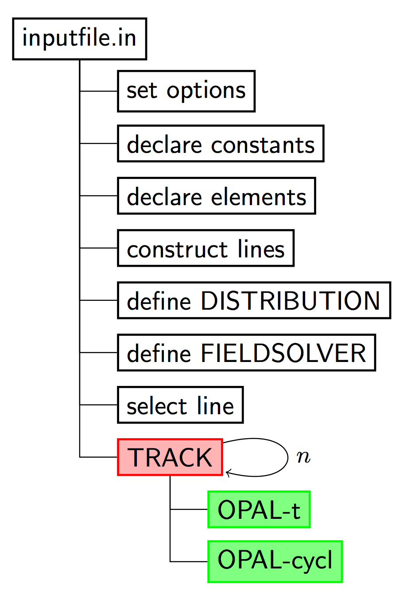
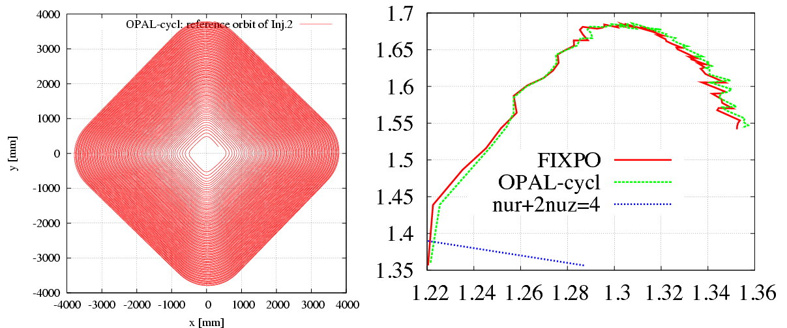
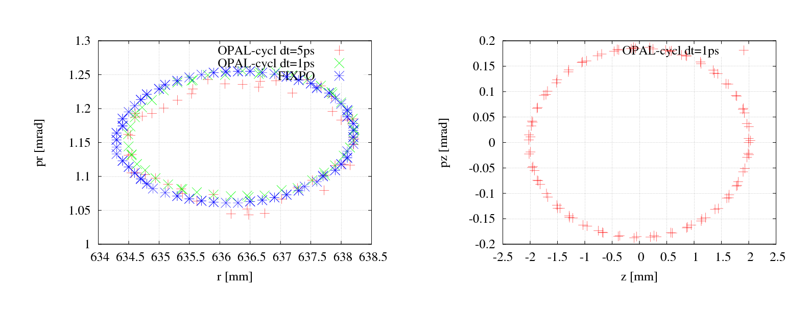
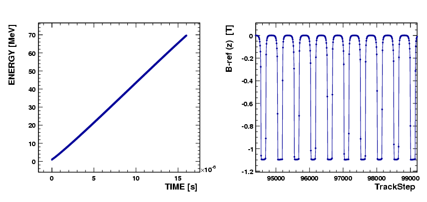
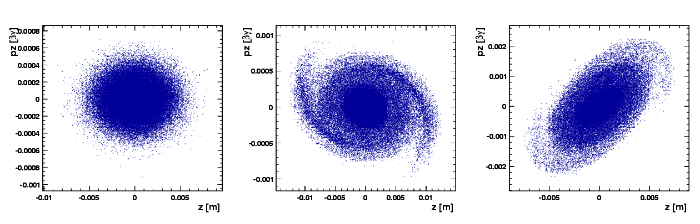

4 Tutorial
This chapter provides a jump start for some of the most commonly used OPAL features. The complete set of examples is still broader than this pilot, but the examples below are representative and can be run with modest computing resources. Most run on a single core, and several can still be used efficiently on a small number of cores.
4.1 The Simulation Cycle

4.2 Starting OPAL
The application name is opal. When called without any argument, an interactive session is started.
$ opal
Ippl> CommMPI: Parent process waiting for children ...
Ippl> CommMPI: Initialization complete.
> ____ _____ ___
> / __ \| __ \ /\ | |
> | | | | |__) / \ | |
> | | | | ___/ /\ \ | |
> | |__| | | / ____ \| |____
> \____/|_| /_/ \_\______|
OPAL >
OPAL > This is OPAL (Object Oriented Parallel Accelerator Library) Version 2.0.0 ...
OPAL >
OPAL > Please send cookies, goodies or other motivations (wine and beer ... )
OPAL > to the OPAL developers opal@lists.psi.ch
OPAL >
OPAL > Time: 16.43.23 date: 30/05/2017
OPAL > Reading startup file "/Users/adelmann/init.opal".
OPAL > Finished reading startup file.
==>One can exit from this session with the command QUIT;.
For batch runs, OPAL accepts the command line arguments shown below.
| Argument | Values | Function |
|---|---|---|
--input |
<file> |
The input file. Using --input is optional; the input file can also be provided as first or last argument. |
--info |
0 to 5 |
Controls the amount of output to the command line. Default: 1. |
--warn |
0 to 5 |
Controls the amount of warning output. Default: 1. |
--restart |
-1 to <integer> |
Restart from the given step in a saved phase-space file. |
--restartfn |
<file> |
A file in H5hut format from which OPAL should restart. |
--help |
Display a summary of all command-line arguments and quit. | |
--help-command |
<command> |
Display help for the specified OPAL command. |
--version |
Print the installed OPAL version. | |
--version-full |
Print the OPAL version with additional information. | |
--git-revision |
Print the repository revision hash. | |
--summary |
Print the IPPL library summary at start. | |
--time |
Show total time used in execution. | |
--notime |
Do not show timing info. | |
--commlib <x> |
mpi or serial |
Select the parallel communication library. |
Example:
opal input.in --restartfn input.h5 --restart -1 --info 34.3 Auto-phase Example
This is a partially complete example. First, OPAL must be set into AUTOPHASE mode, and the nominal phase can for example be set to \(-3.5^{\circ}\).
Option, AUTOPHASE=4;
REAL FINSS_RGUN_phi= (-3.5/180*Pi);The cavity could then be defined as:
FINSS_RGUN: RFCavity, L = 0.17493, VOLT = 100.0,
FMAPFN = "FINSS-RGUN.dat",
ELEMEDGE = 0.0, TYPE = STANDING, FREQ = 2998.0,
LAG = FINSS_RGUN_phi;with FINSS_RGUN_phi defining the off-crest phase. A normal TRACK command can then be executed. A file containing the values of maximum phases is created, with a format like:
1
FINSS_RGUN
2.22793The first entry defines the number of cavities in the simulation.
4.4 Examples of Particle Accelerators and Beamlines
4.4.1 Laser Emission, OBLA (SwissFEL Test Facility) 4 MeV Gun and Beamline
The input deck is:
Supplementary files are available in:
4.4.2 PSI Injector II Cyclotron
Injector II is a separated-sector cyclotron specially designed for pre-acceleration of high-intensity proton beams for the PSI Ring cyclotron. It has four sector magnets, two double-gap acceleration cavities (represented here by two single-gap cavities), and two single-gap flat-top cavities.
The input file for single-particle tracking is:
The supplementary files should be placed in the same directory:
To run OPAL on a single node:
opal Injector2.inThe left plot in Figure 4.2 shows the accelerating orbit of the reference particle. After 106 turns, the energy increases from 870 keV at injection to 72.16 MeV at extraction.

From a theoretical point of view, there should be an eigen ellipse for any given energy in the stable area of a fixed accelerator structure. Only when the initial phase-space shape matches its eigen ellipse will the envelope oscillation amplitude remain minimal and the transmission efficiency remain maximal.

The input file for single-bunch tracking with space charge is:
To run OPAL on a single node:
opal Injector2-sc.inTo run in parallel:
mpirun -np N opal Injector2-sc.inTo restart from the last step of an existing .h5 file:
mpirun -np N opal Injector2-sc.in --restart -1The following figures show representative simulation results.


4.4.3 PSI Ring Cyclotron
From the view of numerical simulation, the difference between Injector II and the Ring cyclotron comes mainly from two aspects:
B field: the Ring structure is strongly symmetric, so the field on the median plane is periodic along azimuth. OPAL-CYCL takes advantage of this to store only a reduced field representation.
RF cavity: in the Ring, cavities are typically single-gap structures with a parallel displacement from their radial position. OPAL-CYCL provides the PDIS attribute to model this.

4.5 Translate Old to New Distribution Commands
As of OPAL 1.2, the distribution command was changed significantly. Many of the changes were internal, allowing new options to be added more easily. Other changes were introduced to make creating a distribution easier, clearer, and more consistent across distribution types.
The new distribution command was designed to remain as backward compatible as possible, so that existing OPAL input files would still work the same way, or with only small modifications.
4.5.1 GUNGAUSSFLATTOPTH and ASTRAFLATTOPTH
The distribution types GUNGAUSSFLATTOPTH and ASTRAFLATTOPTH were historically used to simulate electron beams emitted from photocathodes in electron photoinjectors. These are no longer explicitly supported and are now represented as specialized sub-types of FLATTOP.
Old input files using these names still work, with one important exception. Previously, OPAL had a Boolean OPTION command FINEEMISSION (default value TRUE). This option is no longer supported. Instead, the corresponding emitted distribution attribute should be set to a value that is \(10\times\) the universal distribution attribute value in order to reproduce the old behavior.
4.5.2 FROMFILE, GAUSS, and BINOMIAL
The FROMFILE, GAUSS, and BINOMIAL distribution types changed from previous OPAL versions. However, legacy distribution commands should still work as before as long as the momentum units are converted to the current convention.
4.5.3 Change in Momentum Units
Input momentum can be given without units as \(\beta\gamma\), or in eV/c. Up until OPAL 2.2, eV was used instead of eV/c, but this was changed because eV is a unit of energy rather than momentum. To adapt old files with momentum in eV, the following conversion can be used:
\[ P[\mathrm{eV/c}]\,c = mc^2\sqrt{\left(\frac{P[\mathrm{eV}]}{mc^2} + 1\right)^2 - 1} \]
Then set:
INPUTMOUNITS = EVOVERC